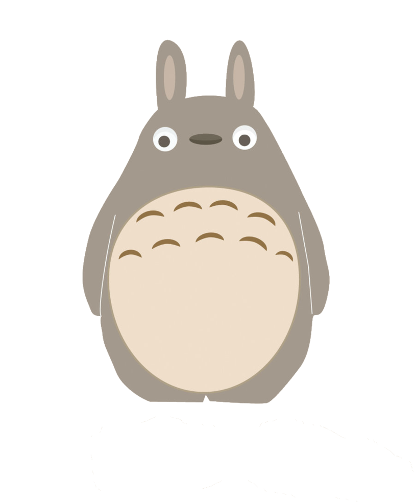

Espero la disfrutes esta pequeña pagina que te hice. ❤
Esta pagina está diseñada solo para ti ❤
Puchurrale al totoro con tu ruedita por favor.😊
💖¡¡Feliz aniversario!!🥳
Pues primero que nada, feliz aniversario mi amor, me alegra mucho poder decirtelo por fin, aun no me la creo que ya se cumplio un año de nuestra relación y me hace extremadamente feliz.
Porque no puedo creer que ya llevo conociendo un año a la mujer de mis sueños, a la razón por la que sonrio cada día. 🥺
Oye mi amor hermosha, solo queria recordarte que lo que siento por ti es el más bonito y bello sentimiento que jamas eh sentido, es increible como llegaste a iluminar mi vida, a hacerla más feliz e interesante, me has llevado a pensar como es posible como una persona a la que no eh visto o tocado pueda ser el centro de toda mi estabilidad emocional y todo mi cariño y aun que estés a 887 km de distancia a 181 horas de trayecto caminando (para ser exactos) te siento conmigo, siento todo el tu calor, tu cariño, tu amor, y me hace sentir increible, gracias por este año Viviana, creeme que lo repetiria las veces que fueran sin cambiar absolutamente nada. 🌹💕
Adoro cada parte de ti, al verte a ti, solo veo la tranquilidad y toda la felicidad que me traes, por qué tienes todo eso que me encanta,
que me fascina y que me hace sentir tan mas afortunado de tenerte, por qué se que soy el único que puede tenerte,
el único que podrá estar contigo toda la vida, es por eso que estar contigo es el mejor sentimiento que he sentido en mi vida,
te amo, y estoy seguro de que quiero quererte toda la vida, porque para mí lo eres todo. 💖
En serio eres el centro de mi felicidad. 🥰
Espero te este gustando🌹
Oye...
Sabias que en serio me encanta esa sonrrisa que tines?
Es que en serio... wow... es maravillosa
Te ves tan hermosa cuando la haces que wooowwwwwww
No sabes la felicidad que me llega cuando la veo 🥰🥰🥰🥰🥰🥰🥰
En serio eres una mujer fascinante, siempre hayas como sacarme una sonrisa, siempre con lo divertida
e inperactiva que eres, no se como puedo tener a una mujer tan fascinante y bella como tu en mi vida. 🥰
Por si acaso te recordare que siempre estare para ti, siempre estare ahí cuando me necesites, listo para escucharte
y ver en que te puedo ayudar, sabes que siempre podras contar conmigo para cualquier cosa que desees hacer, sea lo que sea
yo te ayudare a condseguirlo, si necesitas ayuda en tu trabajo, ya sabes, mandame lo el archivo que necesites que haga,
siempre te ayudare para todo, absolutamente para todo. 🌹💕
Ademas de que hay otra cosa que no termina de pasar por mi cabeza y si te tengo que reclamar por eso.🤔
¿¿En serio como le haces?? 🤔
Trato de encontrar alguna explicación o algo, pero nada se me ocurre. 🤔
Y es que como le haces para ser más bella cada diaaaaaaaa???????, en serio como le haces 🤔
Es que se que obviamente tengo una novia hermosa, pero esta siendo mucho para que mis ojos lo puedan
digerir a diario, y que diagas que te quedes con un nivel de bellesa alto, pero estable, pues no,
cada día aumenta maaasss. 😍
Siento que ya hasta se me van a formar cataratas en los ojos por recibir esa docis tan grade de luz y bellesa diaria. 😍🥰
Ya que estamos aqui, aún me gustaria que me respondieras algo.🥺
Puchurale con tu ruedita 😘